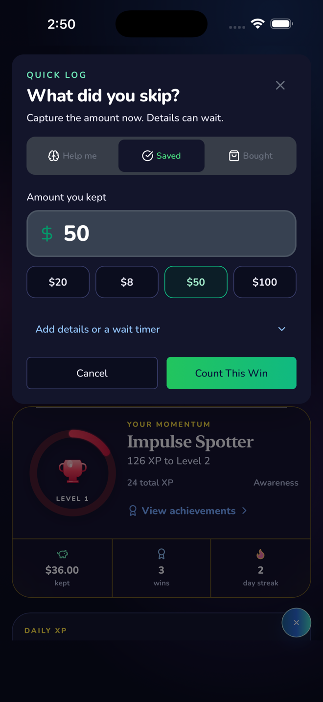
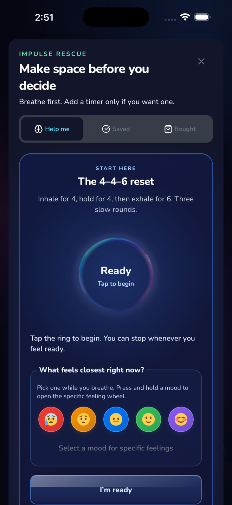
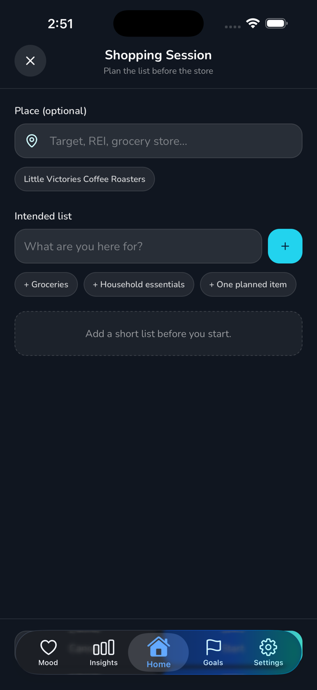
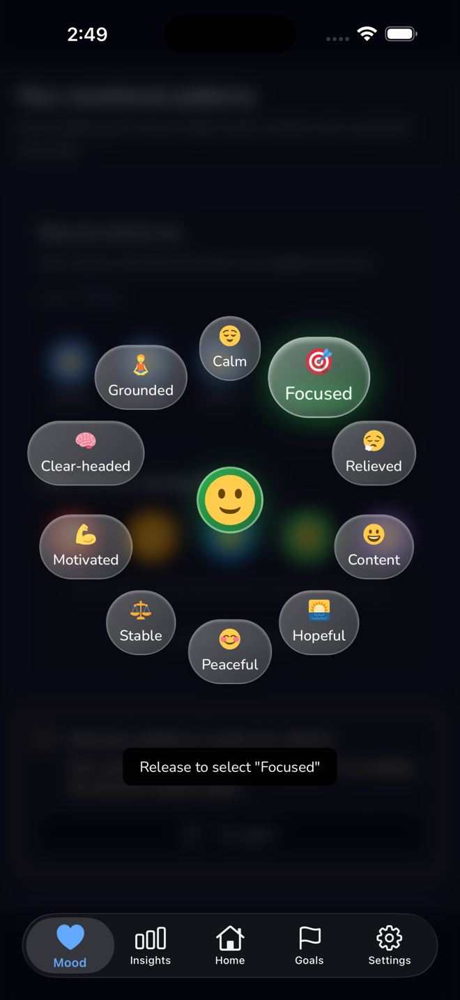
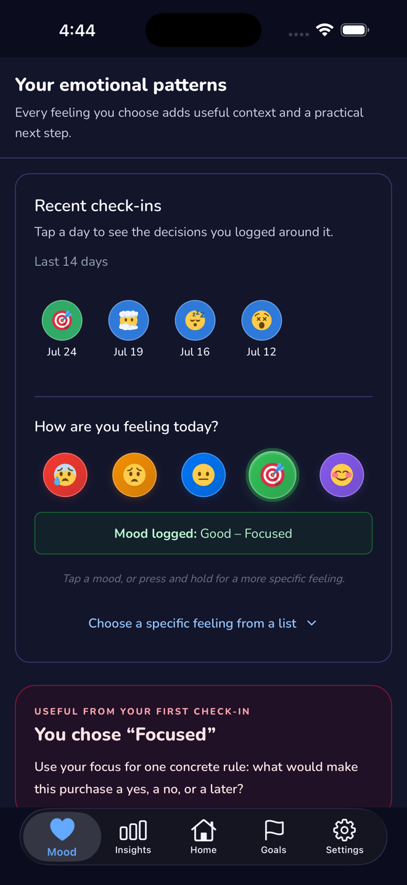
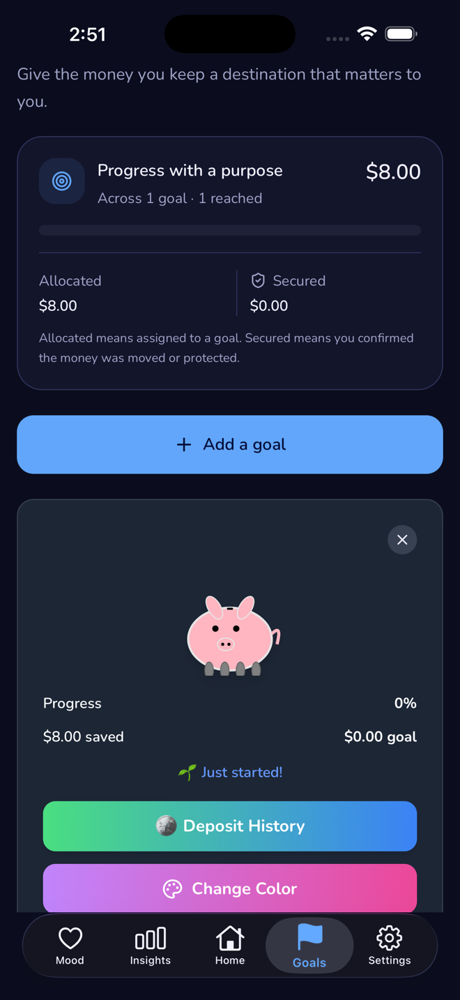
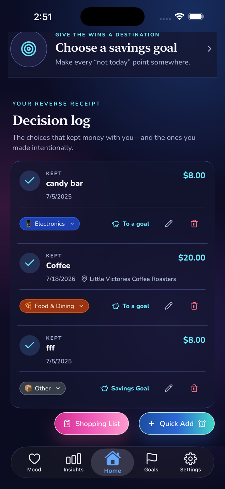
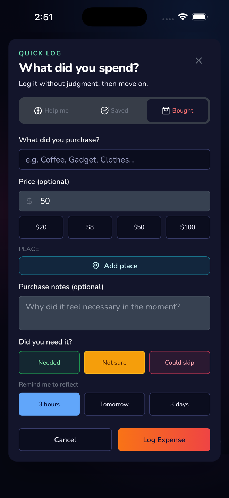

Impulse Spending App
For the moment you are about to buy and want a better next step than checkout.
- Log the urge and the amount
- Use a wait timer when the purchase feels urgent
- Turn resisted purchases into visible savings
Log resisted purchases, pause unsure buys, plan shopping lists, and spot the moods and places that shape your spending.

Fast enough for the urge, visual enough to feel rewarding, structured enough to use every day.
XP, levels, streaks, and achievements make the save feel concrete instead of invisible.
Log what you almost bought in seconds, with optional notes, mood, category, and place context.
Premium insights help you spot patterns between mood, place, context, and impulse decisions.
Add optional place context so the app can help you notice which stores are routine, risky, or worth planning for.
Bring a short list into the store, reuse past lists, and keep off-list decisions visible.
Get quick wins from daily challenges and a simple daily ritual that keeps your savings goals visible and doable.
Start with the workflow that matches the money habit you want to change first.
For the moment you are about to buy and want a better next step than checkout.
For people who need momentum, reminders, and visual progress more than spreadsheet discipline.
For purchases that need a little space before they become transactions.
Real screens from the iPhone app









A daily loop you can finish in under a minute
When a purchase starts feeling urgent, open ImpulseLog before checkout.
Save it, put it on a wait timer, or start a shopping list before you walk into the store.
Watch your savings grow and see which moods, categories, and places shape your spending.
Calculate how much you could save by tracking your impulses
Start free, upgrade for optional Premium insights
No. ImpulseLog is built for the moment before a purchase. It helps you pause, log, plan, and learn from almost-buys instead of only reviewing transactions after the fact.
You can log mood, notes, category, and optional place context with resisted purchases or pending decisions. Premium insights then help surface patterns, weekly summaries, and practical recommendations.
We use encrypted connections, Firebase-managed infrastructure, and privacy-focused handling practices. We do not sell your data, and you can export or delete your data anytime.
ImpulseLog is built for neurodivergent minds with quick logging, visual progress, wait timers, shopping lists, and dopamine-friendly gamification. It is focused on impulse spending, not full household budgeting.
No. Place context is optional and used when you choose to add a place to a save, purchase, or shopping list. It is designed to help you understand store patterns, not to run background tracking.
We use encrypted connections and secure storage practices for your app data.
We make money from subscriptions, not your attention
Export or delete your data anytime.
Add places when they help you learn. We do not use background location tracking.
Start free and turn the next resisted impulse into visible savings.